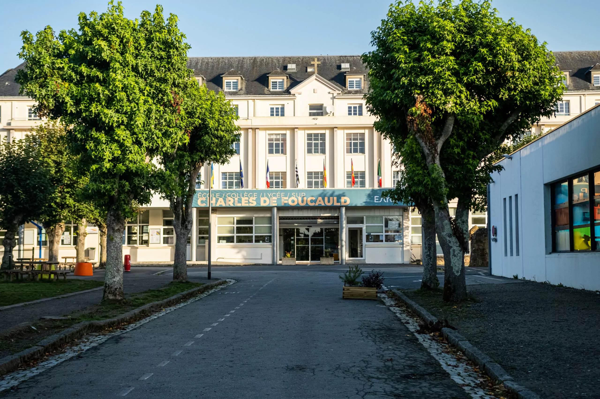

Je réalise actuellement mes études en BUT informatique à Lannion, je suis en deuxième année et je souhaite poursuivre mon BUT en choisissant
le parcours A : Développement et réalisation d'applications. Je recherche actuellement une alternance pour cette année universitaire et l'année prochaine.
Je souhaite réaliser cette alternance en tant que développeur WEB et / ou développeur de logiciels, de préférence à Brest mais je peux également
réaliser mon alternance à Lannion.
Vous retrouverez ici le site de l'IUT de Lannion
Charles de Foucauld

J'ai étudié au collège et Lycée Charles de Foucauld à Brest avant de venir à Lannion. J'ai obtenu mon Brevet des collèges
et mon Baccalauréat dans cet établissement. J'ai choisi de faire un Bac général avec les options
physique-chimie, sciences et vie de la terre et numérique et sciences de l'informatique, puis un terminale j'ai conservé les spécialités
physique-chimie et numérique et sciences de l'informatique.
Vous retrouverez ici le site du collège et lycée Charles de Foucauld